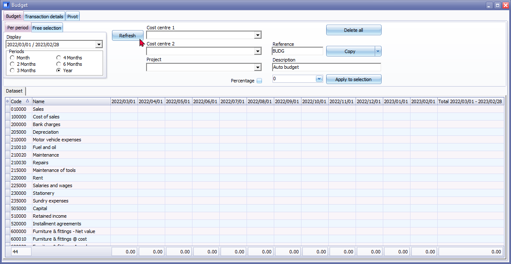
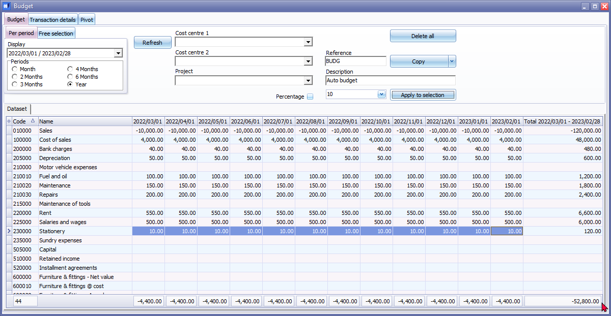

Budgets (Reports ribbon)
|
The following new features have been added:
|
To process your Budget figures:
- On the Reports ribbon, select Budgets. The Budget tab will be displayed.
- Period - Select a period on the Per period tab. You may click on the Free selection tab to select a specific date or a range of dates to include budget figures. Select the period “Year” (i.e. “2022/03/01” to “2023,/02/28") to enter your budget figures for the selected period.

- Click on the Refresh button to populate the accounts and periods. This will list all the existing ledger accounts in your “Chart of accounts” (existing as added, edited in the Setup → Accounts (Setup ribbon)), in the Account code sequence.
|
|
If you already have existing budget figures in the previous year, you may use the “Copy – From Budget Previous year” option. If you have already posted transactions in batches and documents in the previous year, you may use the “Copy – From Actual Previous year” option to use the transaction totals as basis for your budget. |


- Reference – The default is “BUDG”. You may enter your own reference, up to 15-characters, in this field. For the purposes, of this example, leave as is.
|
|
Options
"Delete data for this period?" If you click Yes, the budget figures for the selected period or dates will be deleted.
" Add amount to selection?" Click Yes to change the amount or percentage. The value (amount or percentage) will increase or decrease any existing values. |
|
|
You may enter or overtype an amount. Editing an amount, e.g. editing one or more digits will produce an error message, for example; '-13,000.00' is not a valid floating point value for field '2022/06/01 - 2022/06/30' |

- Description – The default is “Auto budget”. You may enter your own description (up to 35 characters), in this field. Enter “Budget 2022/2023”.
- Select the first account, i.e. “Sales” and enter the monthly budget amount, i.e. –10,000 in die amount field (before the Apply to selection button) in.
|
|
The “ - “ (minus sign), added before the amount, indicates a credit budget amount. For a debit budget amount, add the amount without the “ - “ (minus sign). |
- Select the months for which you need to add the budget figures.
|
|
To select multiple periods, press the “Shift” key on your keyboard and click on the periods to select the months. |
- Click on the Apply to selection button. A confirmation message is displayed:
“Add amount to selection?”
- Click Yes to add the monthly budget figures to the selected months.
- Repeat this process to add your budget figures.
- After adding your budget figures for the accounts in this tutorial, the “Budgets” screen should display as follows:

|
|
Do not enter any budget figures for the main accounts. In this example, Budget figures were not entered for the Main account “Motor vehicle expenses”, but for each sub-account. |

- After finishing to process your budget figures, you may click on the Transaction details tab or Pivot tab view and explore the generated budget figures.